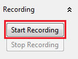

Recording Experiment
Definition
Video stream can be recorded and saved into a video file using the Recording panel.
Start Recording
Prerequisits
Track session needs to be started to be able to record video stream.
Steps performed to start recording the video stream:
- Click button: Start Recording in the Recording panel

Stop Recording
Note: Recording is automatically stopped when Track session ends.